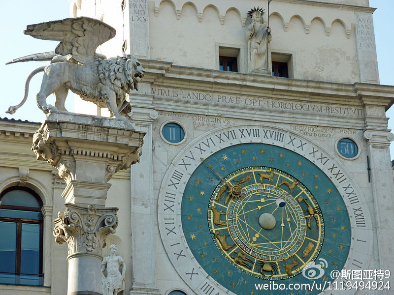

翻了两本书在网上找了半天，依然没有找到是什么时候分针出现在时钟上的，为什么设计成这种共用一个圆盘的方法。倒是又发现了14世纪有个叫Jacopo Dondi dell'Orologio的人设计的时钟是一天转一圈且0点是对着正右方的。 
”山东新华锦集团相继在美国收购了两个知名品牌和两家营销公司，形成了设计、生产、品牌、销售一体的产业链。并在柬埔寨建立了加工企业，将一些劳动密集型生产转移出去，在全球形成高中低档分工明确的产品布局。” 雇美国人设计、品牌，营销，柬埔寨生产。中国人干什么呢？ 未来贸易新趋势：价值链纵横交织全球网络化
“3月7日，李克强总理对外宣称‘（房地产行业）要顶住下行压力，遇更大困难我们会出手。很多财税、金融政策、宏观调控工具，还没有完全使用’” 听上去就像是饮鸩止渴阿。每次房价一跌就政府出手救市，之后一定双倍的疯长上去——如果大家都知道只要共产党不垮楼市不会跌，谁不买房啊？